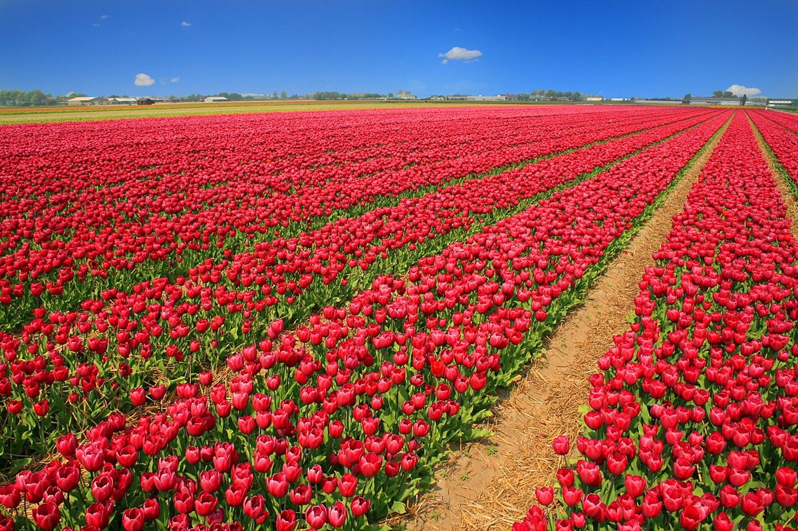
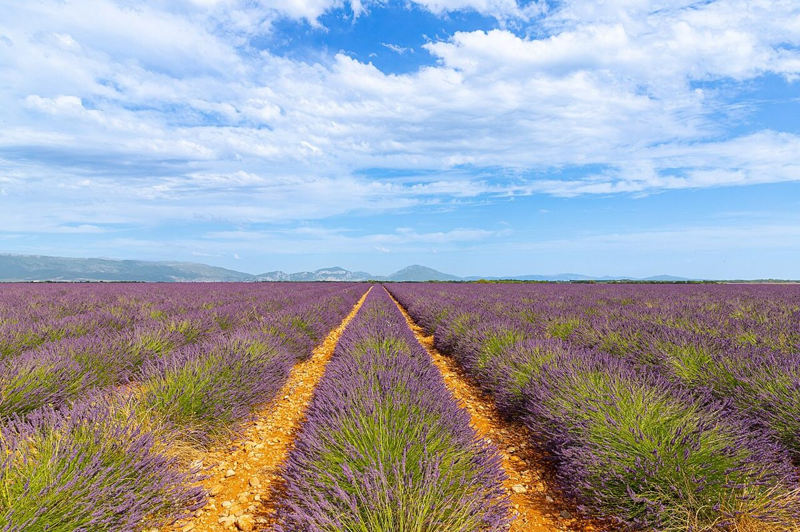
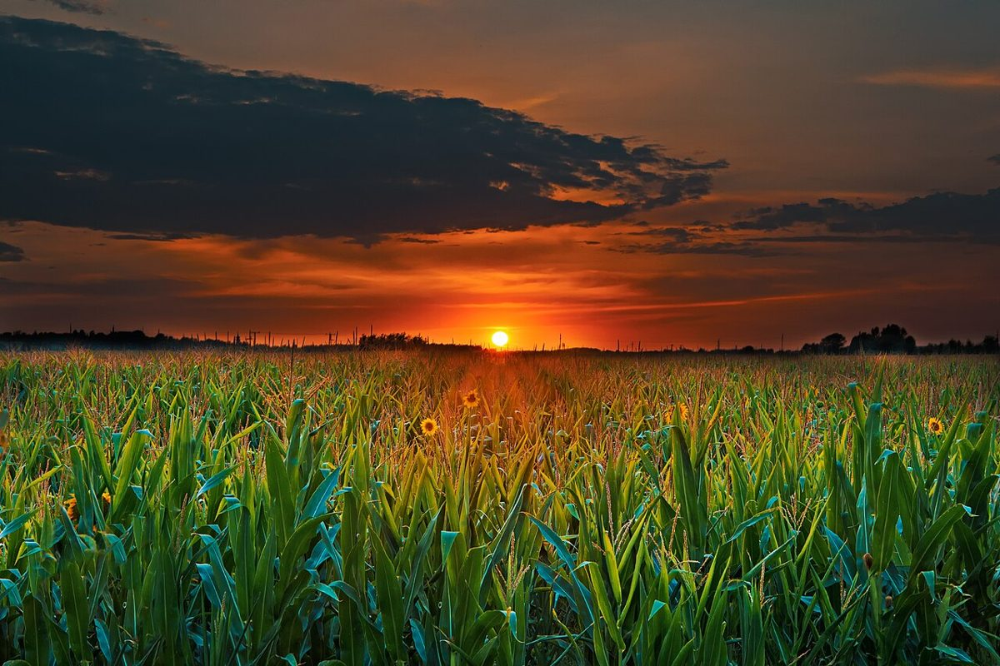

カフェ / 佐賀県佐賀市愛敬町
Viv cafe
佐賀県佐賀市愛敬町にあるカフェ「Viv cafe」のご案内ページです。営業時間やメニューなど、詳しいことは準備中。まずはInstagramをのぞいてみてください。
制作側の連想
「Viv」から、彩度のつまみを思いついた。
店名の由来は分かりません。制作側は「Viv」の響きから、鮮やか(vivid)という言葉を連想しました。そこでこのサイトは、色の鮮やかさを表す「彩度」をテーマにしています。ページを進むごとに色が少しずつ濃くなり、ホームでいちばん鮮やかになります。お店の理念・由来とは無関係の、制作側の連想です。
彩度つまみ
0から100まで、同じ景色を5段階で。
0255075100
帯の写真は「Houses-in-Burano」(acediscovery / CC BY 4.0)で、国外のイメージです。下のつまみで、このページ全体の彩度を変えられます。
イメージ
鮮やかさの3つの見本
写真は佐賀市の風景ではありません。国外・撮影地不明のフリー素材を、色の見本として並べています。



ご案内
お店のこと(確認できたものだけ)
| 所在地 | 〒840-0812 佐賀県佐賀市愛敬町９−２ |
|---|---|
| 電話 | 090-9723-5684 |
| 営業時間 | 準備中 |
| 定休日 | 準備中 |
| ご予約 | 準備中 |
| 駐車場 | 準備中 |
| SNS | Instagram @viv_cafe_2025 |